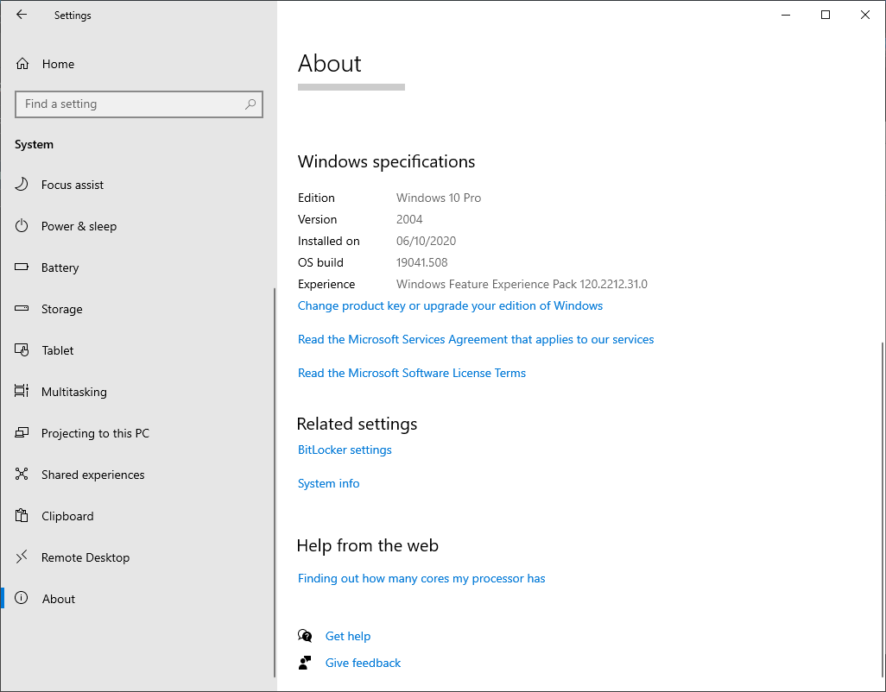

Jupoyter Notebookと環境構築¶
Python開発環境として、Jupyter Notebookの導入方法と、その基本的な使い方を解説します。
Jupoyter Notebookとはなにか¶
Jupyter Notebookは、Pythonのコードとその実行結果、またそのコードに関するドキュメントを一緒に記述できるいい感じのファイル形式のことを指します。このテキストもJupyter Notebookで作成されています。Jupyter Notebookでは、プログラムのコードとドキュメントを単一のファイルで保存できるため、新しいアイデアを試したり、他人と共有しすることが簡単になります。
コードとドキュメントが混在できるというのは、例えばこの文章の今読んでいるところはドキュメントです。コードは、以下のように表示されます。
[1]:
# フィボナッチ数列を表示する
fib = [0,1] # 初期化
for i in range(10):
fib.append(fib[-2] + fib[-1])
print(fib)
[0, 1, 1, 2, 3, 5, 8, 13, 21, 34, 55, 89]
コードが記載されるひとかたまりは、チャンクやセルとよばれ、コードの実行はこのチャンクごとに行われます。チャンクを実行すると、その出力がチャンクの下に表示されます。#から始まる行や、#より右側の文字列はコメントで、プログラムの実行に影響しません。一時的にコードを無効化したり、コードに関するメモを記載したりするのに使います。
Jupyter Notebookファイルはテキストファイルで.ipynbという拡張子で保存されます。
この.ipynbファイルは、Jupyter Labという名前のソフトを通じ、webブラウザ上に表示、編集することができます。Jupyter Labは、以前はJupyter Notebookという名前で開発されていたソフトの後続・高機能版になります。文脈によって「Jupyter Notebook」は.ipynbファイルのことであったり、表示させるソフトのことであったりすることがあるので、少し紛らわしいです。
ここでは基本的なJupyter Lab(Notebook)の導入方法と、その使い方を説明します。
環境設定¶
Jupyter Notebookを利用するには、googleが無料で提供するサービスを利用するか、自分のパソコンにPythonとJupyter Notebookの環境を準備して利用するかの2つの方法があります。
前者の場合、設定が簡単ですが、利用には様々な制約があります。後者の場合、導入までのステップが多いですが、本格的にPythonを利用することができるようになります。
以下、2つの方法を紹介します。
Google Colaboratoryの紹介¶
Google ColaboratoryはGoogleが無料で提供しているオンラインのJupyter Notebook環境です。これを利用すると、下記のPython環境の構築やJupyter Labのインストールなどを行うことなく、googleが提供するサーバー上で動くJupyter環境がブラウザから利用することができます。
Google Colaboratoryを利用するメリットとしては、
作成したNotebookの共有が楽(リンクを送信するなど)
環境構築が楽
GPUが使える
デメリットとしては、
インターネット接続が必要
Googleアカウントが必要
定期的にセッションが消える(書いたコードやドキュメントは消えない)
Google Driveの容量を使う
Git等他のツールとの統合がしにくい
が挙げられます。
「定期的にセッションが消える」については、シャットダウンまでの残時間は90分ルールと12時間ルールがわかりやすく説明されています。簡単に言うと、90分何もしないとやり直し、12時間経つと何をしていてもやり直しです。
リモートセンシング解析で何百GBものファイルを扱う場合、この90分ルールと12時間ルールと、Googleドライブ容量の制限により、実用的ではありません。 ただ、演習やハンズオンセミナーなどPythonの入門用に一時的に利用するには良い選択肢だと思います。
以下に、ローカル環境でのPythonおよびJupyter labの環境構築手順を示しますが、うまく行かない場合、演習ではGoogle Colaboratoryを利用してください。Google Colaboratoryを利用する場合は、以下をすべてすっ飛ばして大丈夫です。
WSL2上のLinuxでPythonを使う(Windows 10)¶
Windows上でPythonを利用する場合、以下の方法があります。 - Windows上にPython環境を構築する - Windows上でLinuxを動かし、その上にPython環境を構築する
GIS、リモートセンシングで利用するPythonやGDAL等のライブラリは、開発者の多くがLinux(Unix)を使っています。そのため、Windows上でうまく動作しないことがよくあります。Windows10には、WSL2(Windows Subsystem for Linux)という仮想化技術があります。WSL2の導入によって、Linuxの仮想マシンがWindows上で動作し、この仮想マシン上のLinuxでPythonを動かすことができるようになります。
ここでは、上記2つのうち後者の方法を説明します。
大まかな流れは、 1. WindowsにWSL2をインストールする 2. WSL2にUbuntu 20.04をインストールする 3. UbuntuにAnacondaをインストールする 4. AnacondaでPython環境を作成する 5. Jupyter Labをインストールする 6. WindowsとUbuntuのファイル共有の設定をする となります。
WLS2の導入方法はMicrosoftが紹介する手順に従っています。作業時間は1時間ほどです。
Windows 10のバージョンの確認¶
WSL2は、windowsバージョンが1903、ビルドが18362以降で使うことができます。(ARM64の場合はそれぞれ2004および19041) これより低いビルドバージョンの場合は、Windows Update Assistantを使ってアップデートしてください。 ビルドバージョンはWindowsの設定画面からから以下のように確認できます。

WSLの設定¶
WLS2はWSLのアップグレード版として提供されています。そのため、まずはWSLの導入を行います。
Powershellを管理者権限で起動します。
Powershellに下記のコマンドを入力して実行します。これでWLSがインストールされます。
dism.exe /online /enable-feature /featurename:Microsoft-Windows-Subsystem-Linux /all /norestart
Powershellに下記のコマンドを入力して実行します。これでWLS2へアップグレードのための準備がされます。
dism.exe /online /enable-feature /featurename:VirtualMachinePlatform /all /norestart
WSL2 Linux kernel update package for x64 machinesから、最新のLinuxカーネルアップデートパッケージをダウンロードしてインストールします。パソコンがARM64の場合は、ARM64 packageをインストールしてください。アーキテクチャはsysteminfo | find "System Type"をPowershell上で実行することで確認できます。

Powershellに下記のコマンドを入力して実行します。これでWLS2がデフォルトになります。
wsl --set-default-version 2
次に、WSL2で動かすLinuxをMicrosoft storeから導入します。最新のLTSであるUbuntu 20.04を選択て、GETをクリックするとインストールが始まります。
インストールが完了後、Microsoft storeの右上の起動ボタン、もしくはデスクトップやスタートメニューに追加されたUbuntu 20.04アイコンから、Ubuntuを起動します。
Ubuntuの設定¶
初めてUbuntuを起動すると、黒い画面(Linuxではターミナルやコンソール、コマンドプロンプトなどと呼ばれます。)が次のように表示されます。
この
Enter new UNIX username:
に、WSL2内のUbuntuで利用するユーザー名をアルファベットで入力してください。Windowsのユーザー名と異なっていても構いませんし、同じでも構いません。
Enterキーを押すと、
New password:
と表示されます。ここで先ほどのユーザーに対する設定したいパスワードを入力してエンターキーを押します。パスワード入力の際、キー入力は何も表示されませんが、構わずエンターキーを押してください。パスワードはWSL上のUbuntuでのみ利用されます。
Retype new password:
と、パスワードの確認メッセージが表示されるので、再度同じパスワードを入力してエンターキーを押してください。
以下のように表示されます。以上でWSL2のインストールとUbuntuの導入が完了しました。
Python環境等の設定¶
ここでは上記で導入したWSL2上のUbuntuにPythonおよびJupyter Labの環境を設定していきます。
Ubuntuのターミナルの最後の行にカーソルがあり、そこには、以下のように表示されていると思います。
takahisa@DESKTOP-QRCQMC:~$
takahisaの部分に、Ubuntuの初期設定で指定したユーザー名、@から:の間に書かれているのは、自動で設定された端末名です。:から$の間には、今開いているフォルダ名が書かれています。~はホームフォルダと呼ばれ、/home/takahisa/を示しています。WindowsでいうところのC:\Users\takahisa\のフォルダです。Linuxではフォルダの区切りを/で表示します。
ターミナル上でコマンドを実行するには、$の後ろにコマンドを入力し、エンターキーを押します。
ctrl + v や右クリックメニューはターミナル上で使えません。Windows上でクリップボードにコピーしたコマンドをターミナルに張り付けるには、右クリック、ターミナル上の文字列をコピーするには、文字列をマウスで選択(ハイライトされます)して右クリックをしてください。
まずは以下のコマンドを入力して、Ubuntuの既存のアプリケーションをアップデートしましょう。
sudo apt update
sudoから始まるコマンドは、コマンドを管理者権限で実行することを意味しています。パスワードが聞かれたら、設定したパスワードを入力してエンターキーを押してください。(パスワードや入力は表示されません。)
上記コマンドは、Ubuntuのアプリケーションリストを更新します。次のコマンドでアップデートがあるアプリケーションを実際に更新します。ターミナルに貼り付けて実行してください。
sudo apt upgrade
次に、以下のコマンドでlibxkbcommon-x11-0というライブラリをインストールしてください。これはWLS上で動くPythonの画面出力をWindows側につなぐためのライブラリです。
sudo apt install libxkbcommon-x11-0
以下のコマンドでAnacondaをインストールします。Anacondaは、Pythonの様々なバージョンをいい感じに管理できるソフトです。
wget https://repo.anaconda.com/archive/Anaconda3-2020.07-Linux-x86_64.sh
bash Anaconda3-2020.07-Linux-x86_64.sh
上記のコマンドで、Anacondaの利用規約がターミナルに表示されます。エンターキーを押して最後までスクロールし、同意してください。(yesと入力する表示が出てくると思います。)
次に、Anacondaをインストールするフォルダの確認があります。デフォルトの場所(/home/takahisa/anaconda3)でよいので、そのままエンターキーを押してください。
インストーラーによるAnacondaのインストールが終了すると、ターミナルの設定等を自動でやるか聞いてきますので、yesとしてください。
以下のコマンドで、インストーラーの削除、設定ファイルの読み込み、anaconda自体のアップデートを行います。アップデートやインストール先の確認が出たら、適宜yを押して進めてください。
rm Anaconda3-2020.02-Linux-x86_64.sh
source .bashrc
conda update conda
上記を実行すると、takahisa@DESKTOP-QRCQMC:~$の表示が(base) takahisa@DESKTOP-QRCQMC:~$に変更されます。
以下のコマンドで、Anaconda上にPython3.8の環境をpy38という名前で作成し、その環境内に入ります。
conda create --name py38 python=3.8
conda activate py38
上記を実行すると、(base) takahisa@DESKTOP-QRCQMC:~$の表示が(py38) takahisa@DESKTOP-QRCQMC:~$に変更されます。 Anacondaで作成したPythonの環境内に入ると、その環境名がユーザー名の前に表示されます。
以下のコマンドで、作成したPython環境に、必要なPythonライブラリをインストールします。
conda install -c conda-forge geopandas rasterio matplotlib jupyterlab opencv ipympl nodejs
jupyter labextension install @jupyter-widgets/jupyterlab-manager@2.0
以上でWSL上のUbuntuにAnacondaを導入し、Python環境を構築することができました。
あと少し、WindowsとWSL上のデータのやり取りの設定をしたら、Jupyter Labの準備が終了です。
WSLとWindowsとのファイル共有¶
Ubuntuのホームフォルダ(/home/takahisaもしくは~)には、Windowsのファイルマネージャーのアドレスバーに\\wsl$\Ubuntu-20.04\home\takahisaと入力するとアクセスすることができます。また逆に、UbuntuからはWindowsのホームフォルダには/mnt/c/Users/からアクセスすることができます。
以下のコマンドをUbuntuのターミナルで実行し、UbuntuのホームディレクトリにWindowsのDocumentへのショートカットを作成しましょう。
ln -s /mnt/c/Users/takahisa/Documents Win_Documents
以上でJupyter Labのインストールが終了です。
Jupyter Labの使い方¶
Jupyter Labを開く¶
Google Colaboratoryを使う場合は、Google ColaboratoryのページからNotebookを新規作成してください。すでに作成したNotebookはGoogle Driveからアクセスすることができます。
WSL2を利用している場合は、スタートメニューからUbuntu 20.04を起動してください。Ubuntuのターミナルが開きます。
ターミナルに、以下のコマンドを入力して、Anacondaの環境に入ります。アカウント名の前に(py38)と表示されればOKです。
conda activate py38
次に、以下のコマンドを入力して、Jupyter Labを起動します。
jupyter lab
ターミナルに表示されるメッセージ内に、
http://127.0.0.1:8888/?token=XXXXXXXXXXXXXXXXXXXXXXXXXXXXXXX
の形式のURLが表示されますので、マウスで選択し、右クリックでコピーします。
コピーしたURLをWindowsのgoogle chromeやFirefoxで開くとJupyter Labが起動します。
左のフォルダアイコンをクリックすると、Ubuntuのホームフォルダにあるファイル一覧が表示されます。セットアップの際にWin_Documentsという名前でWindowsのDocumentsフォルダへのリンクを作成しているため、ここをダブルクリックすることで、WindowsのDocuments内のファイルにアクセスすることができます。